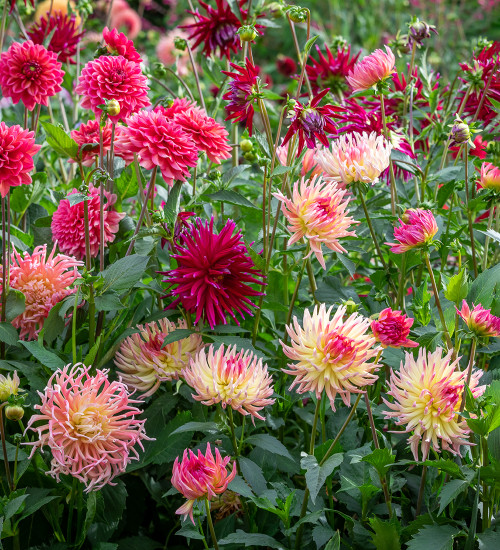

Jurginas

Jurginai (Dahlia) yra astrinių (Asteraceae) šeimos augalai, kilę iš Meksikos. Jie yra labai populiarūs dėl savo įspūdingų žiedų, kurie gali būti įvairių spalvų ir formų. Jurginai žydi nuo liepos mėnesio iki pirmųjų šalnų.